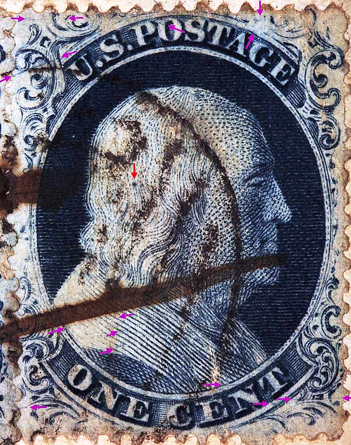
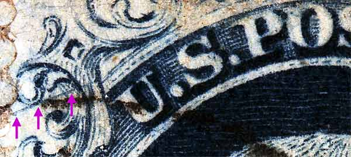
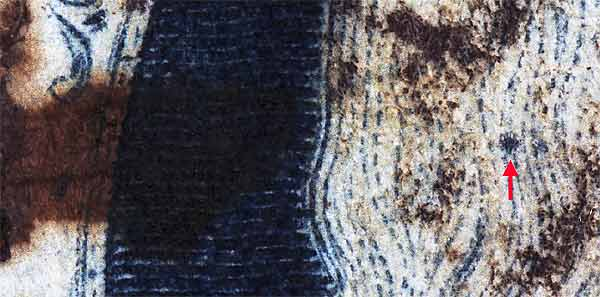
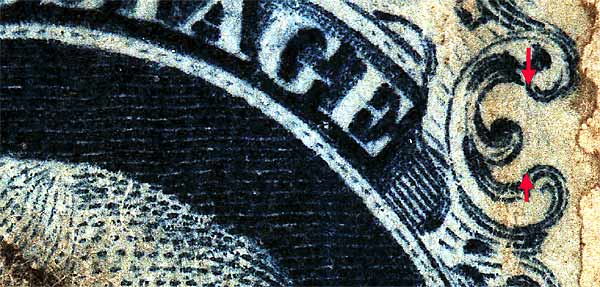
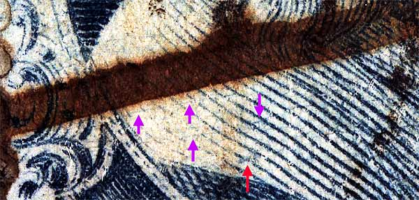
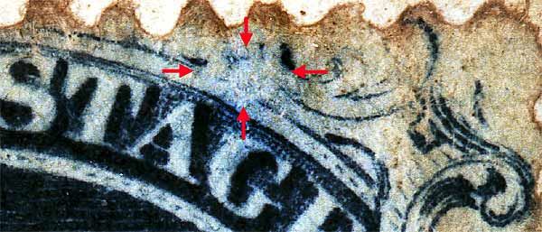
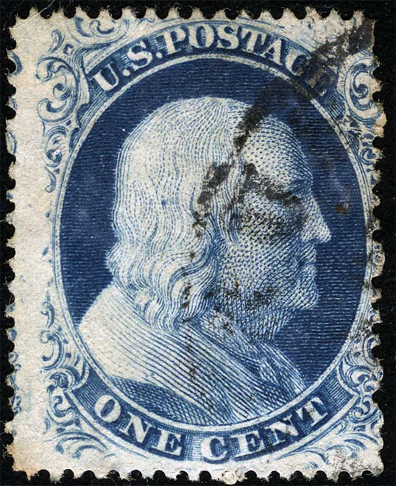

1¢ Franklin Issue of 1851-1857, PLATE 4 Position 30R4, (Scott #21) |
| Scott #21, Blue, Type III, Relief C Issued both imperforate and perforate. Had this been an imperforate copy then it would be Scott Number 8. The published plating diagrams indicate many scratches and plating marks. Plate 4 changed it's appearance quickly as it wore and not surprisingly many of the plating marks appeared and then quickly faded away. One of the most annoying aspects of trying to identify Plate 4 positions is the rapid change in appearance and the disappearing plating marks. This stamp matches the 68R4 diagram on page 305 of Neinken (note the strong dot in the head and the large white space above the G of POSTAGE). Neinken updated position 68R4 in USPCS Chronicle 83 page 147, proving this was not 68R4, and suggesting this stamp may be 28R4. However, the vertical scribe line between ornaments L and M (see Figure 3 below) is placed further left than normal, which is characteristic of the ninth vertical column of the right pane. Thus it is believed that this was position 29R4, and the diagram shown as 29R4 in Neinken (page 300) is some other position. With the discovery of the Wagshal (Siegel Sale 994 Lot 1107) vertical strip of three, 9R4 19R4 and 29R4, we know this could not be 29R4. The L/M guideline is very similar in placement to 20R4. This also means the plating diagram in Neinken for 30R4 is incorrect. |
|  |
Figure 1. (BELOW) A heavy diagonal scratch of color cutting under Ornament A. This scratch has been confirmed as a constant plating mark that developed during the life of the plate, as it does not occur on early printings of this position. In 2004, Dick Celler found 10 copies of this position in the Phlatelic Foundations photobooks. Of the 10, only one (PF074407) showed the heavy diagonal scratch. The following numbers are Position 30R4 without the heavy scratch. PF414430, PF226930, PF287689, PF297982, PF279490, PF322510  |
Figure 2. (BELOW) A heavy dot in the head east of Ornament D. This is illustrated on the original Neinken plating diagram for 68R4.  |
Figure 3. (BELOW) A very faint vertical guide line cutting thru Ornaments L and M.  |
Figure 4. (BELOW) Other marks of interest resembling plate cracks. The red arrow is illustrated as a plating mark for the original 68R4 diagram in Neinken.  |
Figure 5. (BELOW) Highlights the wiped-out area above AG of POSTAGE. This is one of the key constant characteristics of this position. Students of this issue find that these "colorless spots" are very helpful on plate 4, and many of them are illustrated on the Neinken plating diagrams.  |
Figure 6. (BELOW) Close examination of this image and the others above confirms multiple plating marks. Image courtesy of Ken Relya |
|  |
|
DISCLAIMER and COPYRIGHT INFORMATION: I can be reached at: nerdman@ix.netcom.com REVISED 1.17.2016 |